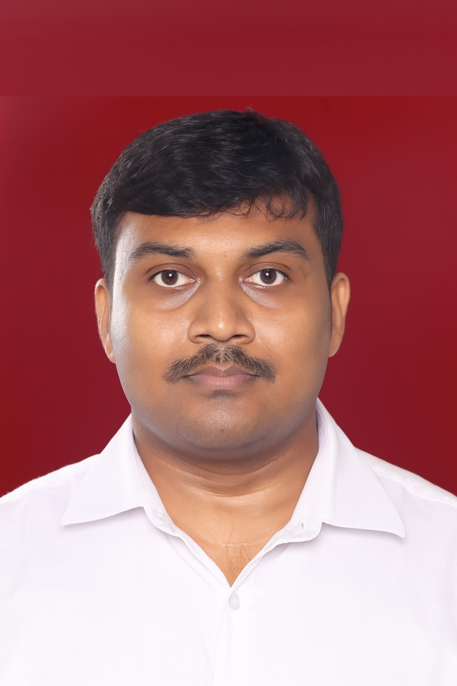

People Behind GIS Gateway
Meet the researchers, developers, and geospatial experts driving innovation in environmental and remote sensing science.

Dr. Suresh D
Remote Sensing & GIS ResearcherDr. Suresh D is a geospatial researcher specializing in environmental risks, landslide assessment using differential SAR Interferometry, and hydrological modeling. Holding a Ph.D. from VIT, an M.Tech from Anna University, and a B.E. in Civil Engineering, he has served as a Research Associate at IIT Roorkee, an Assistant Professor at Saveetha Engineering College, and a Geomatics Analyst at kCube Consultancy Services. With over 18 peer-reviewed articles and 250+ citations, his research focuses on flood mapping, SAR data applications, and climate change impacts.
Yogeshwaran A
Technical AssistantYogeshwaran A is a Technical Assistant at the Centre for Remote Sensing and Geoinformatics, Sathyabama Institute of Science and Technology. A Physics postgraduate from the same institution, he has hands-on research experience in thin film synthesis and gas sensing applications, including a project titled "Synthesis of SnO₂ Thin Films for Gas Sensing Applications" at the Indira Gandhi Centre for Atomic Research (IGCAR), Kalpakkam. Trained in advanced material characterization techniques such as E-beam evaporation, RF sputtering, FESEM, HRTEM, and XRD, Yogeshwaran also brings professional experience as a Server Engineer at IGCAR (2025). He demonstrates strong technical aptitude in MATLAB and Python, alongside core strengths in adaptability, teamwork, and communication.